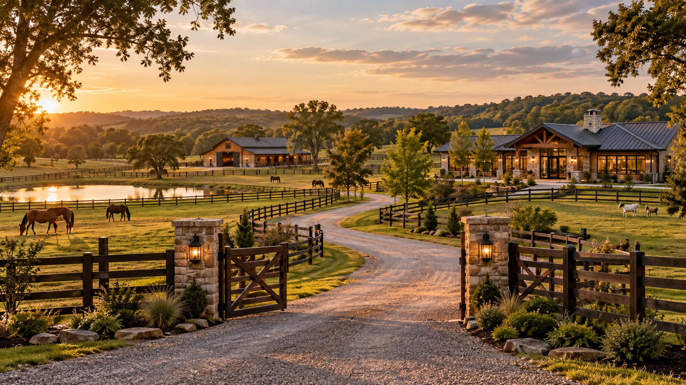

Service
A standard carried forward.
Rodriguez Ranch
Built on Service. Rooted in the Land.
The Story Behind Rodriguez Ranch
Rodriguez Ranch begins with a simple idea: build a life where service, animals, land, food, family, and meaningful work all belong to the same story.
A standard carried forward.
Work worth building a life around.
Something designed to outgrow one person.
Where It Starts
Rodriguez Ranch is a long-term vision for creating a life that is productive, independent, connected to animals, and grounded in something tangible.
Instead of building one career, one business, or one source of income in isolation, the ranch creates a place where multiple goals can support each other.
Veterinary medicine can serve animals and the surrounding community. Pastures can support horses and livestock. Gardens can provide food and plants. A market can eventually give those products somewhere to go. Rescue work can give part of the property a purpose beyond profit.
The result is not one business idea. It is an entire way of life being built piece by piece.

Built on Service
Years of military service helped shape the values behind the Rodriguez Ranch name.
The goal is not to turn the ranch into a military theme. The influence is quieter than that: responsibility, discipline, preparation, follow-through, and taking care of the people and animals depending on you.
Own the work and the outcome.
Do the important work consistently.
Build something useful to other people.
Plan before problems become emergencies.
Why Build It?
Build assets, skills, food systems, and businesses that create more control over how life is lived.
Create a property where animals are part of everyday life and receive the space, care, and attention they deserve.
Build something that can become a home, gathering place, business, and legacy rather than simply another workplace.
Leave room for veterinary medicine, agriculture, plants, food, rescue work, and future ideas to develop over time.

Rooted in the Land
Roughly twenty acres creates enough room for Rodriguez Ranch to become an ecosystem instead of a collection of unrelated projects.
The veterinary clinic can occupy one dedicated area while pastures, animals, gardens, greenhouse space, food production, rescue areas, and future businesses develop around it.
The Flagship Venture
The veterinary center gives the ranch a professional foundation built around the same animals that inspired the larger vision.
RR Veterinary Center is planned as a serious medical practice with its own professional identity, while still belonging to the larger Rodriguez Ranch family.
Companion-animal medicine can form the core of the practice, with room to grow into surgery, diagnostics, equine medicine, and large-animal care over time.
Explore RR Veterinary Center
What the Ranch Represents
The point of Rodriguez Ranch is not simply owning acreage. It is what can happen on that acreage every day.


The Long View
Rodriguez Ranch does not depend on everything happening at once. The vision works because each chapter can create the foundation for the one that follows.
Chapter One
Build the knowledge, qualifications, financial foundation, and experience needed for the larger vision.
Chapter Two
Find the right property and begin building infrastructure around how the ranch will actually be used.
Chapter Three
Develop pastures, fencing, gardens, animal areas, utilities, and the working systems of the property.
Chapter Four
Establish the flagship professional practice and begin serving families and animals in the surrounding community.
Chapter Five
Expand agriculture, food production, botanicals, rescue work, and eventually the Rodriguez Ranch Market.
Rodriguez Ranch
Build a place where the work matters, the animals are cared for, the land produces something useful, the family has room to grow, and success creates more purpose rather than less.
Built on Service. Rooted in the Land.